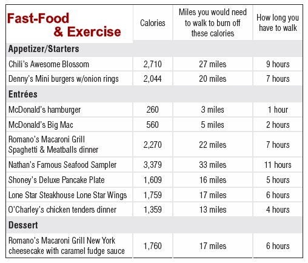

Many fast-food meals have added sugar. That means extra calories and also little nutrition.The American Heart Association suggests only eating 100 to 150 calories of added sugar per day. That is about 6 to 9 teaspoons. Many fast-food drinks alone hold well over 12 ounces. A 12-ounce can of soda contains 8 teaspoons of sugar. That equals 130 calories, 39 grams of sugar, and nothing else.
Here is a table of how much calories that are contained in many of the popular fast food and how much exercise you need to do to burn them off
Calories is a measurement for the amount of energy that is being consumed by your body. Due to the high amount of energy, you body could feel full easily and quickly with out eating too much. But this can also cause many illnesses related to it, such as obesity, high blood sugar, because most of the time people tend to eat a lot of them due to their addicting flavours.